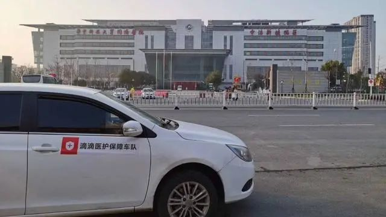
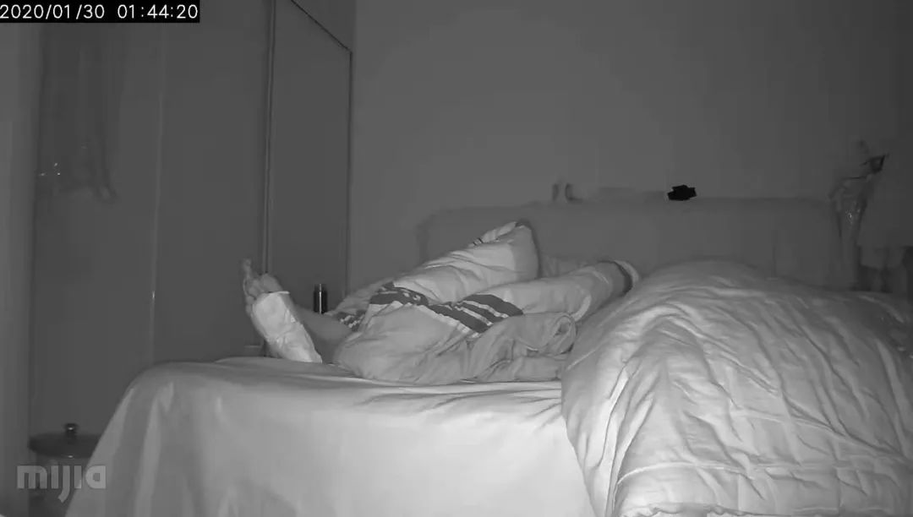
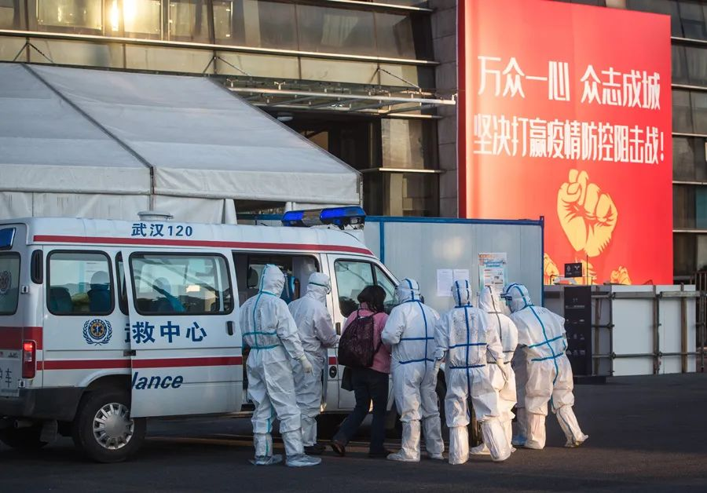

特别报道|武汉火线救人50天现场全记录
原文链接 备份链接 “很多人去世。”袁鸣说，“但他们和我们都尽了最大的努力。” 2月15日上午，刚刚经历了一夜冬日雷雨和大风的武汉大雪纷飞，袁鸣早早进入病房查房。依次穿上蓝色隔离服、白色防护服，戴上手术帽、面屏和护目镜，套上手套和脚 …
澎湃新闻记者 明鹊 朱莹 钟笑玫
实习生 陈媛媛 刘昱秀

2月16日，在武汉市蔡甸区张湾街黄土坡村，村民志愿者在路口执勤，黄土坡村这个路口也是进出新民村的必经之路，两个村子相邻。 新华社 图
69岁的李华说，只要挺住了，这一切都将成为历史。
1月23日，武汉“封城”。早期轻视疫情，防护不力，让这座城市错失了阻击病毒的先机。之后病人一度或难以确诊，或一床难求，一些人因此错过了最佳的救治时机。
据湖北省卫健委通报，截至2月22日24时，武汉市累计报告新冠肺炎确诊病例46201例，死亡1856例；累计治愈出院8171例。
这座新冠肺炎的始发地，没有哪个时刻像现在这样，千万居民同呼吸共命运。
护士杨柳每天都很害怕，但依旧坚持在一线，直至自己被感染；菜贩刘娟二十多天没有洗澡，终于治愈卸下一身的焦虑；失独家庭李华夫妇给彼此打气，希望更多的人能够挺过去……
他们无论什么身份，都是“新冠肺炎”的患者，是千千万万的普通人。一个月来，他们用倔强与坚持在跟病毒抗争，付出了爱和痛，甚至生命。

“封城”后的医护保障车队。
发病与“封城”
56岁的刘娟和丈夫陈彪在武汉市江岸区西马路菜市场摆摊卖菜30余年，每天从早上6点到晚上7点，主要卖些菌子、蘑菇、青菜。
1月12日下午，摊铺来了一位老客户买菜，蒙着头，裹得严严实实，像得了重感冒一样。此后，刘娟开始头痛、全身酸痛。
此时，武汉已出现多起“不明肺炎”，但多数人觉得离自己很远。据《长江日报》报道，武汉市疾病预防控制中心主任、主任医师李刚1月19日接受媒体采访时表示，“新冠病毒传染力不强，不排除有限人传人的可能，但持续人传人的风险较低……疫情是可防可控的。”截至1月20日，武汉卫健委的通报中显示，“密切接触者中，没有发现相关病例”。
时间回拨到2019年12月8日，一位来自武汉市华南海鲜市场的病人，因持续7天发热、咳嗽和呼吸困难入院，后来他成为武汉市卫健委1月11日通报的首例“不明肺炎”患者。五天后，这位病人的妻子也因同样的症状入院。
一直到1月1日，这个位于武汉闹市区，离汉口火车仅一公里的华南海鲜市场才关闭。
西马路菜市场离华南海鲜市场有四五公里，市场有三百多个摊位，是武汉市江岸区最大的菜场。那时候，菜场里已有不少人生病了，但没有人想到是“传染病”，而且都不愿意说自己的病情。刘彪也一样，别人问起他妻子，他就含糊说道，“不怎么样，过几天就好了。”
刘娟去诊所吊了4天水，病情却一天比一天严重。1月17日，她烧到了37.9度，出现拉肚子、呼吸困难等症状。陈彪看到妻子很难受，把摊铺一关，带着她去了武汉市第六医院。
一进医院，护士叫他们戴口罩，并给他们每人发了一只。陈彪不理解，觉得戴着口罩不舒服，一直不愿意戴。那时，医院挤满了病人，医生都穿着刘娟从没见过的白色防护服，她跟丈夫说，“穿这个衣服像大熊猫一样”。
他们挂号、查血，做完CT后，医生说她感染了一种新病毒，让他们去武汉市第五医院隔离。到了五医院，刘娟被诊断为社区获得性重症肺炎以及脓毒血症。
当天晚上，她整晚都在留观室打点滴。晚上，刘娟去上厕所时，突然昏倒在地上，被护士抬上了担架。那时，五医院只剩重症监护室有病床，一天的费用要五千到一万元。陈彪对医生说，不管花多少钱也要把妻子治好。
刘娟记得，迷迷糊糊之中，她被推进了重症监护室。医生用无创呼吸机给她吸氧，打点滴来抗病毒、抗感染、抗炎和营养支持。其间，她还做了核酸检测为阳性，被确诊为“新冠肺炎”。
1月20日晚上，医生打电话给陈彪，说准备把刘娟转到金银潭医院集中治疗。陈彪问“她不是好一些了吗？为什么要转院？”医生说接到上面的指示，让转过去统一治疗，而且治病也不收钱了。刘娟成为了收治免费后金银潭医院接收的第一批“新冠肺炎”患者。
陈彪给妻子送衣服过去时，已经快到凌晨了，几十台救护车都在马路上跑。
他后来才知道，就在1月20日的晚上，国家卫健委高级别专家组组长钟南山称：“新冠肺炎”肯定存在人传人，有14名医务人员已经感染了。他建议没有特殊情况，不要去武汉，有感冒要到发热门诊就诊，要戴口罩。

生病前，刘娟和丈夫陈彪的合影。
第二天，从外地的部队刚回武汉不久，李阳阳去药店买到了几只口罩，之后他又去超市买了一些年货。
两天前，30岁的李阳阳因为有事，刚从异地的部队回到武汉。他没有想到，接下来发生的疫情，成为了一场历史性的教训。
1月21日，一家人提前在家里吃了年夜饭。第二天，武汉传出要“封城”，但很快又说是谣言。那时候，李阳阳发现武汉人变得谨慎又慌张，一方面认为疫情不严重，另一方面又敏感多疑。
事实上，“封城”的消息传出来后，一些人当晚就“逃离”了武汉，一些人到处询问、核实，犹豫要不要提早离开，还有一些人决定留下来。
李阳阳回部队的火车票，很早就已经买好了。1月22日当天，他送妻子和小孩回了在黄冈武穴市的娘家。晚上回到武汉后，他又去药店买口罩，抢到了店里最后一盒N95口罩，50个，19块8毛钱一个。那时候，他还不知道什么是N95口罩，只觉得它很贵。
1月23日凌晨2点，武汉市政府宣布：23日10时开始“封城”。此后的1月26日，武汉市市长周先旺表示：武汉市有1100多万常住人口，户籍人口990多万，流动人口将近500万。因春节和疫情因素，已经有500多万人离开了这座城市。
那天一早，下着小雨，车站机场人山人海，李阳阳跟着最后一批出城者离开了。到上午10点，武汉正式“封城”，公交、地铁、轮渡戛然而止；长途客运、机场、火车站全部暂时关闭。
截至当日24时，湖北省549例累计报告的新冠肺炎确诊病例中有495例来自武汉。
急诊护士的伤痛
武汉，别称“江城”，历史上被称为“九省通衢”，是中国内陆最大的水陆空交通枢纽中心。因为错过了最好的防疫时期，病毒以悄然在人群中迅速蔓延，很快攻破了整个武汉市的防御。
在武汉一家医院急诊上班的护士杨柳记得，1月10日，他们医院接诊了第一个发热病例，之后每天人数疯长，10个、30个、60个……
不久，他们医院开设了发热门诊，但病人不愿意去发热门诊，害怕过去会交叉感染。所以，一般患者过来后，会先到急诊科检查，病情严重的，再由急诊转到发热门诊。
杨柳回忆，以前患者来打针，叽叽喳喳说个不停，如今每个人带着口罩，低着头，一片鸦雀无声。
白天黑夜，急诊室都黑压压的，全是病人。医生、护士连吃饭、上厕所都得挤时间；而马路上空空荡荡，进出医院的人要么开车，要么打车，要么走路回家。
武汉“封城”第一天，做市场推广的黄晓民6点钟下班，开车途经武汉协和、武汉同济等四家医院，发现路上车子很少，路边很多人打不到车。到了晚上，他跟朋友商量，决定组队当志愿者司机，免费接送医护人员。
他发了一条朋友圈，新建了一个微信群，群里人数很快达到400多，其中有300多名医护人员，86名志愿者司机。
1月24日，除夕夜，一名护士在群里发了一条出行信息。黄晓民打电话过去确定时间、地点，最后在武汉中心医院后湖院区接上了对方。这是黄晓民接的第一单，那时候，他戴着泳帽、泳镜，口罩，“有点像蜘蛛侠”。
因为是第一次，他有些紧张，把车窗户全部都打开了，风“哗啦哗啦”地吹进来，车里的噪声很大，听不见对方说了什么。到目的地时，护士要给他钱，黄晓民不要，说自己是志愿者。护士很感激，第二次带了几个一次性帽子、手套、口罩和一个防喷溅的面罩给他。
有天晚上，他送完人，上车准备要走时，看到一辆殡仪馆的车经过，一个姑娘在后面一边追一边哭喊妈妈，他感觉心都碎了。
1月25日早上，黄晓民起床后有点咳，呼吸不顺。他不想去医院检查，觉得医院病毒多、风险大，而且轻症患者只会让回家隔离。所幸他吃完药后病情渐渐好转。
三天后，武汉市新增了800例确诊病例。黄晓民知道后，在车里哭了两回。他觉得压力很大，担心没法保障志愿者的生命安全。当天晚上，他写一份倡议书，建议从1月29号开始，志愿者暂停接单，直到获取专业的防护服和N95口罩。但第二天，依旧有车队队员私底下运送物资上一线。
除夕的前两天，杨柳急诊的同事确诊被感染了，当天中午就被送去了隔离区。几天前，他们医院另外一个院区，一个高度疑似的病人死亡后，当天抢救的医生很快就发烧被隔离。
截至此后的2月12日24时，全国共报告医务人员确诊感染1716名，其中有6名不幸辞世。
杨柳很害怕，妈妈打电话给她说“你回来，不要去了。”但哥哥告诉她，“你不要回来，老人都年纪大了，你回来会把病毒带回家里……”杨柳呆坐在凳子上想，自己确实是病毒携带者，不能回去。
2月3日，杨柳做了CT，检查结果是双肺磨玻璃状，她被感染了，至今未见好转。
摄像头下隔离的父亲
同样是2月3日，刘静的父亲入院医治不久便去世了，遗体接受表上写着“疑似肺炎”。
11年前，刘静的母亲遭遇车祸，撞伤了大脑，之后没有再出去工作过。
父亲今年54岁，是一名普通的工人，每个月工资四千多块钱，却省吃节用地攒下一些钱。自那次母亲生病后，父亲就想如果再生病，不要再去找别人借钱。
1月17日，刘静和父亲突然咳嗽，以为是感冒了。此时，武汉新冠肺炎的确诊病例很少。刘静当时还想，武汉一千多万人，他们也没有去过华南海鲜市场，病毒不可能会落到他们头上。
五天过后，刘静的体温一直在36度多，但她父亲发烧接近39度。当天，父亲在家吃了退烧药，体温很快就降下去了。但到了第二天，他又开始发烧了。
当时武汉已经“封城”，汉口属于“重灾区”，刘静怕去医院交叉感染，只能让父亲先在家里隔离。她每天不停地刷手机信息，看到网上说空调开到30度可以杀死病菌，她就把空调调到30度。但她一开空调，父亲就说他要热死了。刘静听到这话，跑回房间哭了。
那两天，父亲每两个小时量一次体温，“看到37度，他就很开心；一量到39度，他又发慌”。
1月26日，父亲一个人去了社区医院查血。回来后，刘静把父亲的检查结果发给了学医的朋友，对方看了说CRP的指标（C反应蛋白）小于5 mg/L，而新冠肺炎患者这个数值都非常高。
但刘静不放心，当天下午又让父亲再去武汉普爱医院做CT。他们家离医院有点远，家里又没有车。刘静联系社区，社区说没有车，她又打了120，对方答应调度车辆过来。
刘静记得，那天去医院前，父亲在家哭了很久，边哭边说放不下她们母女俩。
“结果不太好，基本上确定是这个病毒。”父亲在医院打电话来，母亲听到后，像个小孩一样哭得很厉害，说他很可怜，没享到什么福。
父亲的CT显示肺部有磨玻璃阴影，确诊为双肺病毒性肺炎。医生说是新冠肺炎，但因为没有试剂盒，也没办法确诊。第二天早上，他整个人烧得不行，刘静又给他吃了退烧药。
事实上，自武汉“封城”后，母亲就一个人睡在客厅。家里的菜炒出来就会装成三份，三人在各自的区域吃。大家交流基本都靠微信和电话。刘静只有在擦酒精、送饭的时候，才会进父亲的房间，父亲总是让她快点出去。
家里家客厅原来有个摄像头，刘静把它拆下来装到了父亲的房间，时不时地在手机里看看他——他经常卷在被子里，露出一只脚，大喘气地呼吸，有时重重地咳嗽。刘静越看越沉重。

1月30日凌晨近两点，刘静无法入睡，盯着监控视频里父亲的脚发呆。父亲脚板上贴着的是“去湿气的足贴”，父女俩都不知道这是不是会有效，总归还是试一下。受访者供图
1月27日晚上，刘静听朋友说武汉协和西院第二天会增加600个床位。她一整晚没睡着，早上6点就开始拨打了120，一直到8点多，120回复说没有床位。于是他们又没去成。
那天中午，叔叔带着父亲又去了武汉普爱医院，抽了一大管血，说要等四个半小时才能出结果。刘静以为是给父亲做了核酸检验，后来去拿报告，才发现是血常规报告，她非常失望。
刘静希望父亲住院治疗，这样一天来回奔波，精神会越加得不好。她打120、社区、市长热线……能打的都打了，基本都回复说让上报社区，但她早就上报了。刘静知道武汉的床位确实不够，但她还是得想各种办法，“我怕爸爸跟新闻里的人一样，还没开始医治就去世了”。
几天后，父亲终于住院了，他一度好转，还跟女儿讨论退休养老的事。2月3日，父亲在医院突然呼吸衰竭死亡。
大多的时候，母亲坐在客厅重复看老电视剧，《还珠格格》、《情深深雨蒙蒙》……她好像停在以前的状态，不太关注新发生的事情，也不太会看疫情的新闻。刘静说，她一说起爸爸，妈妈就不停地哭。

坚持与希望
李阳阳离开武汉不久，父母接连着发烧了。
很快，57岁的父亲病情恶化，他吃不下东西，一天只吃一个饺子，有时候是半瓣橘子。李阳阳知道后，心里很难受，他担心父母没有人照顾，后悔自己离开了武汉，无数次想偷偷地回去。
2日初，武汉市开始“四类人员”的集中收治与隔离。2月10日，习近平总书记强调，湖北和武汉是疫情防控的重中之重，是打赢疫情防控阻击战的决胜之地，要做到“应收尽收”。
为了帮父亲找接收的医院，李阳阳不停地打120、市长热线……2月9日，社区的胡书记告诉他，其父亲已经成功申请入院，等街道办好对接手续就可以住院了。
两天后，李阳阳的母亲也搬进了正规隔离点，他才终于安下心来。
在这场战疫中，留守老人，失独老人，除了自救外，更多的依靠社区的帮助。
在更早的1月中旬，69岁的失独老人李华与妻子，去武汉长航总医院接96岁的母亲回家过年。老太太96岁，有心脏病，住院十几年了。
第三天，老太太突然呼吸困难，一二十分钟后就过世了，没有人知道她是不是感染了新冠肺炎。
几天后，李华的老伴开始感觉不舒服，没力气，喘不过气来。李华带她去阳逻中心医院看病，医生给她量体温，37.1度，开了盐酸左氧氟沙星、肺力咳胶囊、莲花清瘟胶囊三种药后，让他们回家观察。
从医院回来后，老伴要他离开家，担心会传染给他。李华不想离开，老伴就生气，于是他就到几公里外的老房子住了两天。
李华跟妻子18岁开始谈恋爱，24岁结婚，一起走过了四五十年。那些天，他们每天聊天、视频，李华看到老伴一个人在家时，每天空调、暖气都开着，她就躺床上，勉强喝点鸡汤，吃点剩饭。他不放心，又跑回家看她。老伴让他回去，他说：“你一个人怎么办呢？要死死一块，我们都70岁了，管它哟。”
打了三天针，还是不见好转。李华又带妻子去医院复查，做了CT，查了血。医生说她病情比较严重，让回家吃药再观察几天，不行就直接去住院。
1月30日上午，李华的妻子住院了。事实上，回家照顾老伴后，李华也开始发烧。他CT显示双肺均有感染，CRP（C反应蛋白）数值达70.09mg/L。医生让他回家吃药观察。
李华回去后，每天在家睡觉，看电视，自己做饭，除了扔垃圾、看病，基本都不出门。家里一天喷三次84消毒液，开窗通风。
1月31日晚上，他烧到了38度多。第二天，社区工作人员送他到医院检查，检查结果显示轻症，他又回了家。之后几天体温正常，血氧95以上，感觉有点力气。
他每天给妻子打电话、发微信。妻子天天念叨，叫他要吃药、吃好点，多休息。他叮嘱妻子安心治疗，保持良好的心情，有什么情况跟他说。
李华觉得，在大疫面前，人其实很渺小，“要来的终归要来，只要自己心态好，挺过去就行了”。
刘娟转到金银潭医院后，依旧迷迷糊糊，浑身上下没有劲，也吃不下东西。医生很着急，打电话给陈彪说：“你老婆不吃不喝怎么行，你跟她说一声，让她一定要吃，这个病就是要有营养，要有抵抗力才能战胜病魔。”
每天中午，陈彪骑电动车给妻子送稀饭、汤、牛奶、草莓……他只能送到医院门口，再让保安送到里面。他妻子觉得东西太苦，陈彪就在稀饭里加一点糖。
这样过了三四天，刘娟慢慢开始吃东西，病情一天天的好转，甚至可以偶尔看下手机。
刘娟不看手机不知道害怕，看到手机新闻里死了很多人，她害怕得整晚都睡不着。这个时候，护士安慰她，耐心地给她插尿管、倒尿，督促她吃药、喝水，告诉她病情在一天天的好转。
2月3日，刘娟出院了，她感觉像重生了一样。
2月6日至11日：武汉连续6天治愈人数破百，此后治愈的人数越来越多。
李华妻子的病情也渐渐好转。她两次核酸检测为阴性，医生说肺部恢复得很好，2月21日，她出院了。
（文中大部分人物均为化名）
本期编辑 常琛
推荐阅读


原文链接 备份链接 “很多人去世。”袁鸣说，“但他们和我们都尽了最大的努力。” 2月15日上午，刚刚经历了一夜冬日雷雨和大风的武汉大雪纷飞，袁鸣早早进入病房查房。依次穿上蓝色隔离服、白色防护服，戴上手术帽、面屏和护目镜，套上手套和脚 …
原文链接 备份链接 我们该从疫情中获取怎样的“抗体”和“免疫力”？1月29日，大年初五，在武汉市汉口解放大道，一位被确诊新冠肺炎的患者正在转院。摄影/长江日报 金思柳 疫情“罗生门”：患者、医者、决策者 《中国慈善家》记者/温如军 吴可 …
原文链接 备份链接 王宏超/文 父亲患病 父亲今年73岁，有高血压和心脏病等基础病史，从1月28日住院到今天，已经整整11天，这也是我和母亲开始单独居家隔离的时长。我和母亲还有三天就可以解除居家隔离观察，而父亲的情况则并不让人乐观。 父亲 …
原文链接 备份链接 1月23日凌晨2点“交通封城”令公布时，张奇还在刷手机。 张奇是北京人。1月20日，他坐高铁到武汉来探望朋友。此前媒体已经零星有了关于武汉新冠肺炎的报道，而病例数据在20日急速增加了2倍，危重患者已经有44人。不 …
原文链接 备份链接 17 年前的那场公共卫生危机，未能及时公开疫情成为事后被诟病最多的问题之一，也成为中国疾病防控系统以及政府信息公开等许多方面的重要转折点。 而多年后，越来越多的互联网官方渠道成为了重大事件的定海神针，「官宣」被普遍接 …